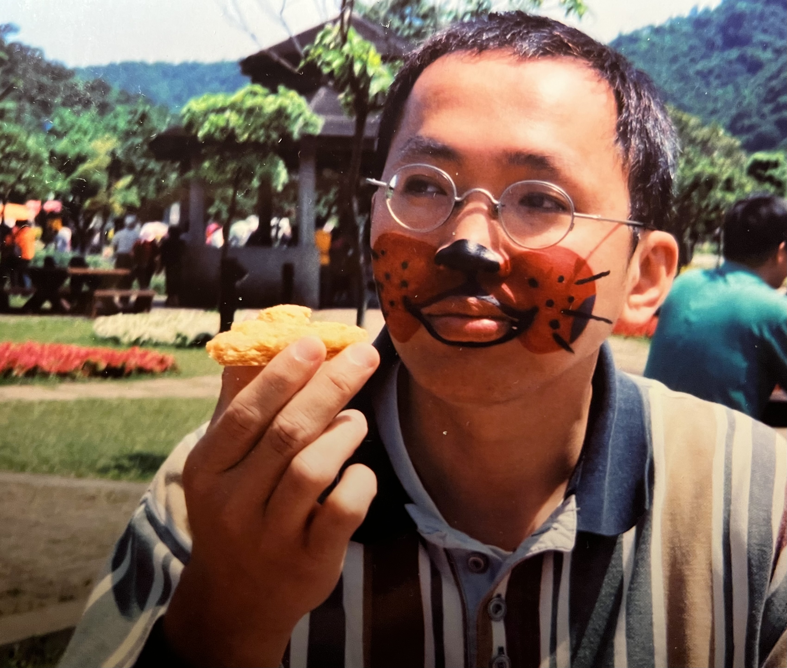

Tsung Ying Wu | WDD 130
Hello, my name is Joseph Wu. I am a student studying Web Fundamentals. I enjoy learning new technologies and creating websites using HTML and CSS. I am interested in programming, AI, and using technology to solve problems. I hope to improve my web development skills in this course.